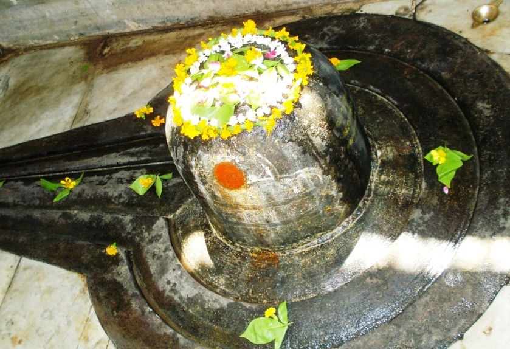

<?xml version="1.0" encoding="UTF-8"?><rss version="2.0"
	xmlns:content="http://purl.org/rss/1.0/modules/content/"
	xmlns:wfw="http://wellformedweb.org/CommentAPI/"
	xmlns:dc="http://purl.org/dc/elements/1.1/"
	xmlns:atom="http://www.w3.org/2005/Atom"
	xmlns:sy="http://purl.org/rss/1.0/modules/syndication/"
	xmlns:slash="http://purl.org/rss/1.0/modules/slash/"
	>

<channel>
	<title>Garudeshwar &#8211; Varanasi Temples</title>
	<atom:link href="index.html" rel="self" type="application/rss+xml" />
	<link>../../../../../index.html</link>
	<description>Temples of Varanasi as referred to in Kashi Khand</description>
	<lastBuildDate>Thu, 19 Jun 2025 05:16:46 +0000</lastBuildDate>
	<language>en-US</language>
	<sy:updatePeriod>hourly</sy:updatePeriod>
	<sy:updateFrequency>1</sy:updateFrequency>
	<generator>https://wordpress.org/?v=4.6.29</generator>
	<item>
		<title>GARUDESHWAR</title>
		<link>../../../../../shiva-temples/garudeshwar/index.html</link>
		<pubDate>Mon, 10 May 2010 02:29:40 +0000</pubDate>
		<dc:creator><![CDATA[admin]]></dc:creator>
				<category><![CDATA[Garudeshwar]]></category>
		<category><![CDATA[Other Shiva Temples (E-K)]]></category>
		<category><![CDATA[Shiva Temples]]></category>
		<category><![CDATA[garudeshwar mahadev rajpipla]]></category>
		<category><![CDATA[garudeshwar photos]]></category>
		<category><![CDATA[garudeshwar temple]]></category>
		<category><![CDATA[garudeshwar temple in india]]></category>
		<category><![CDATA[garudeshwar temple rajpipla]]></category>
		<category><![CDATA[garusehwar temple details]]></category>
		<category><![CDATA[gurudeshwar temple]]></category>
		<category><![CDATA[photos garudeshwar temple rajpipla]]></category>
		<category><![CDATA[www garudeshwar temple com]]></category>

		<guid isPermaLink="false">../../../../../p=375.html</guid>
		<description><![CDATA[Garuda released his mother Vinata from the clutches of slavery (Kindly refer to Khakholkh Aditya – Surya temples).  Later, Vinata told her son Garuda that she must have committed some sin which made her  a slave.  She desired to go to Kashi for atonement of her sins. Garuda took her to Kashi  where Garuda installed [&#8230;]]]></description>
				<content:encoded><![CDATA[<p>Garuda released his mother Vinata from the clutches of slavery (Kindly refer to Khakholkh Aditya – Surya temples).  Later, Vinata told her son Garuda that she must have committed some sin which made her  a slave.  She desired to go to Kashi for atonement of her sins. Garuda took her to Kashi  where Garuda installed a Shiv Ling and started praying ardently. Lord Shiva appeared in person and blessed Garuda stating that the latter would be known by everyone in the world as the vehicle/ride (vahana) of Lord Vishnu.</p>
<p></p>
<p>&nbsp;</p>
<p style="text-align: center;"><strong>(GARUDESHWAR)</strong></p>
<p>Lord Shiva further blessed Garuda that those devotees who worship Garudeshwar will be blessed with Ultimate Knowledge. (Kashi Khand, Chapter 50).</p>
<p><strong><span style="text-decoration: underline;">LOCATION OF GARUDESHWAR</span></strong></p>
<p>Garudeshwar is located at D-31/43, Jangambadi Teliana. When approached from Godowlia Cross Road (Chauraha) on the way to Sonarpura, devotees will have to take a left turn after Bengali Tola Post Office.  Garudeshwar is located adjacent to Purana Durga Badi at Jangambadi, which is a famous landmark.  Devotees can travel Jangambadi by  rickshaw and walk on foot to the temple.</p>
<p><strong><span style="text-decoration: underline;">TYPES OF POOJAS</span></strong></p>
<p>The temple is open for worship from 07.00 a.m. to 07.30 p.m.   For doing special pooja, it is advisable to consult the Poojari before hand.</p>
<h2></h2>
]]></content:encoded>
			</item>
	</channel>
</rss>
